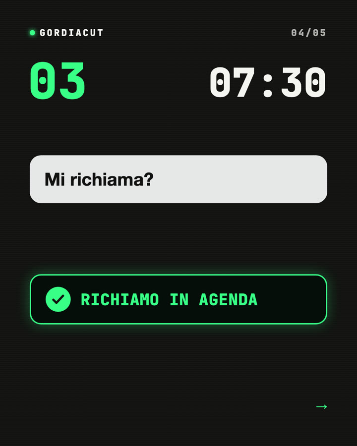
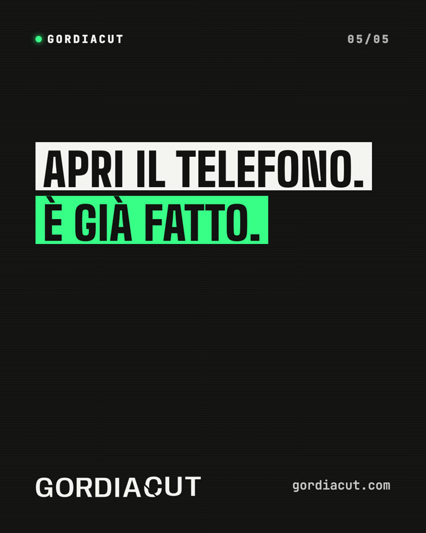

02 · Design
Un profilo si progetta come una pagina
Per il lancio di GordiaCut abbiamo disegnato i primi 9 post come un unico mosaico: ogni post funziona da solo, insieme formano la G tagliata del marchio. Tocca un post per vederlo grande.
gordiacut · anteprima
9post
ITe CZ
1lancio
Carosello


Cosa succede mentre dormi?
Cinque slide, tre orari della notte, tre problemi risolti dal software. Scorri.


Sistema visivo di ON-LINE · Il fuoco
INVISIBILE
Dietro, sfocato, c'è il problema. Davanti, nitido, quello che diciamo noi.
È la regola grafica dei post di ON-LINE: la parola sfocata è il luogo comune da smontare, il messaggio sta davanti con una sola riga a gradiente.